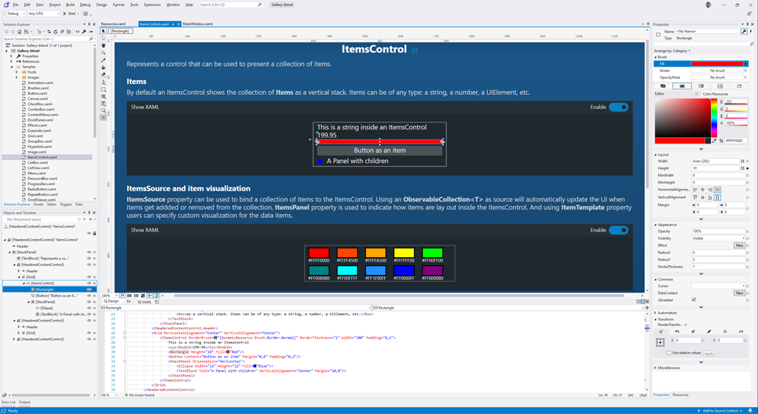
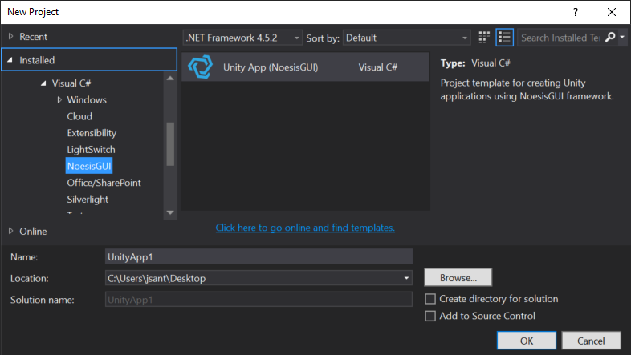
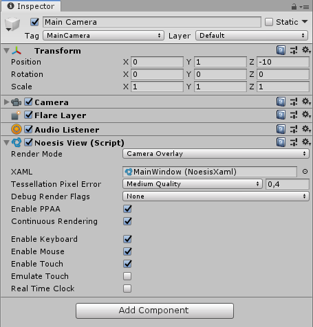
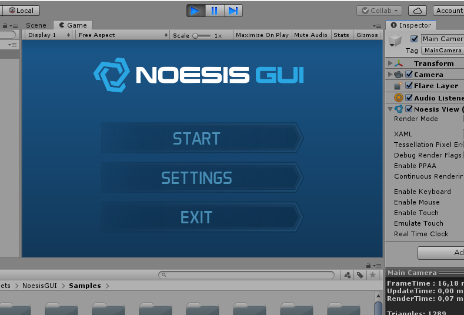
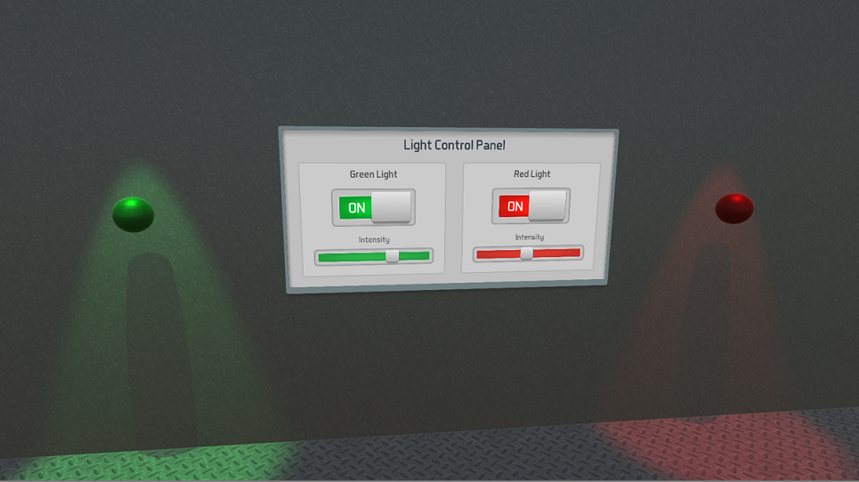

First steps with NoesisGUI and Unity

This tutorial covers the basics of using NoesisGUI within Unity. NoesisGUI entirely replaces Unity UI offering a much more convenient and efficient approach. You will learn how to start editing the samples included in NoesisGUI package and how to create new games from scratch. NoesisGUI is deeply integrated with Unity; XAMLs appear as native resources that directly use assets imported by Unity like Textures, Fonts, VideoClips and AudioClips. It is strongly recommended that you read the rest of tutorials to familiarize yourself with the basic concepts of XAML and the Noesis architecture.

What's new in NoesisGUI 3.1
- NoesisGUI is now a package that must be installed using the Package Manager. The previous package, located at 'Assets/NoesisGUI' must be deleted before installing the new version.
- XAMLs assets are now implemented using a Scripted Importer. This means that we no longer need the corresponding .asset file for each .xaml. You must delete all .asset files belonging to .xaml resources if you are upgrading your project. References to XAMLs from current views must also be recreated. Since NoesisGUI 3.1.1 this step is performed automatically.
- Fonts are also implemented using a Scripted Importer. In this case we are overriding the default font importer used by Unity. Same as with XAMLs, you must delete all .asset files belonging to .ttf resources. Since NoesisGUI 3.1.1 this step is performed automatically.
- NoesisSettings.asset has been deprecated and must be removed. When first installing NoesisGUI 3.1, a new Noesis.settings.asset will be created. This new asset is very similar to the legacy one but no longer needs to be stored inside a Resources folder.
- Sprites are now supported in DataContexts and accessible to ImageSource properties in XAML using data-binding. See our Inventory sample.
- Implemented gamepad events using the new Input System Package. Note that for keyboard, mouse and touch we still need the legacy Input System.
- All new features like Videos, Blending Modes and Shaders included in 3.1 Core are also available for Unity. See our examples VideoEffect and BrushShaders.
- Hot-reloading while in Play mode is now always enabled.
Installation
First step is downloading the latest version of the Unity package from our website. After that, extract the corresponding NoesisGUI-Unity-X.X.X.zip file into a folder and locate the file package.json at the root. Next go to the Package Manager and install the NoesisGUI package from the extracted local folder.
NOTE
NoesisGUI-Unity-X.X.X.zip must not be decompressed inside the '/Assets' folder of your project.
The lowest Unity version NoesisGUI is compatible with is indicated in 'package.json'. For NoesisGUI 3.1.0 it is 2020.2
If this is your first contact with Noesis, we recommend importing all examples and read the provided documentation. Our samples are also available in GitHub and the documentation can be read online at our website.
Once the installation finishes, a welcome window should appear giving you information about the new installed version of NoesisGUI. Please take your time to read the Release Notes to discover what is new.
Examples
Within the installed package we provide a few working samples, each one with its corresponding scene file (.unity) and Microsoft Blend project. For example, for the HelloWorld sample, the scene is located at HelloWorld/HelloWorld.unity and the blend project is located at HelloWorld/HelloWorld-blend.csproj.
A lot more examples can be found in our GitHub repository.
Configuring NoesisGUI
Clicking on Unity menu option Tools -> NoesisGUI -> Settings will open an inspector window that displays global options for NoesisGUI. This same window is also available in Project Settings under the NoesisGUI category. If you want more detail about a specific option just hover the mouse over it to get a useful tooltip description.
NOTE
Settings, by default, are stored at 'Assets/Noesis.settings.asset'. Please move the file to a different folder that better suits your layout.
Blend
Microsoft Blend for Visual Studio (formerly Microsoft Expression Blend) is an interactive WYSIWYG front-end for designing XAML-based interfaces. In this section we will explain how you can use it so changes performed in Blend appear immediately in Unreal Editor, even in Play mode. This workflow allows quick iterations while designing user interfaces.
Note
For getting started with Blend we recommend reading our Blend Native Tutorial
New project
If you want to create a new Unity project ready to work with NoesisGUI we provide a Visual Studio project template available in the Visual Studio Marketplace. To install this template:
- Launch Visual Studio and click Extensions -> Manage Extensions from the Menu Bar.
- In the Extension Manager expand the Online node and search for Noesis. Download the NoesisGUI Project Templates extension and restart Visual Studio.
To create an application from the project template just create a new C# solution using the Unity App (NoesisGUI) template from Visual Studio's Start Page.
Existing project
If you are already working on a Unity project and have decided to add NoesisGUI to implement your game or application user interface, our plugin adds a new entry to the Assets top menu, Open Blend project. The first time you select this option it will create a new Blend project at the root of your Unity project. This project is configured to easily add resources from your 'Asset/' folder.
The project will create a sample XAML at the root of 'Asset/' to start working. Just drag that XAML asset in Unity to the Main Camera of an empty scene and click Play to see your first XAML.
Code-behind
User controls with code-behind need to be adapted to correctly compile in both Blend and Unity. Preprocessor macro directives #define and #if must be used to differentiate NoesisGUI code that is not 100% compatible with WPF. All our samples use preprocessor directives this way.
#if UNITY_5_3_OR_NEWER
#define NOESIS
using Noesis;
#else
using System;
using System.Windows.Controls;
#endif
namespace DummyGame
{
/// <summary>
/// Interaction logic for DummyGameMainView.xaml
/// </summary>
public partial class DummyGameMainView : UserControl
{
public DummyGameMainView()
{
InitializeComponent();
}
#if NOESIS
private void InitializeComponent()
{
NoesisUnity.LoadComponent(this);
}
#endif
}
}
Assets
XAML assets
When you drag and drop XAML files into your project 'Asset/' folder, Unity will automatically create a NoesisXaml asset with its corresponding thumbnail and preview window.
Note
Window root elements are not supported by NoesisGUI in Unity, as the windowing system is provided by Unity engine itself. Instead we recommend to use Page, UserControl, or any Panel class as the XAML root.
You can also create a few XAML snippets from the Tools -> NoesisGUI -> Create menu
The import process will automatically inject dependencies to referenced resources like Resource Dictionaries, Textures, AudioClips, VideoClips, Shaders, Fonts and UserControls. To properly detect dependencies for UserControls and Shaders you must adhere to the following naming conventions:
XAML usage Dependency Asset <local:MyUserControl Input="200" /> MyUserControl.xaml <local:MonochromeBrush Color="White" /> Monochrome.noesisbrush <local:TintEffect Color="Orange" /> Tint.noesiseffect
Note
For properly detecting dependencies, a namespace, like 'local:', must be always used.
To get a list of the dependencies for a given XAML you only need to click on the asset to open its editor.
Just in case you need to add extra dependencies to your XAML, for example resources used by code in ViewModels, we provided the extension property Xaml.Dependencies. The specified URI should be relative to the XAML where the dependency is defined or you just an absolute URI.
<UserControl
xmlns="http://schemas.microsoft.com/winfx/2006/xaml/presentation"
xmlns:x="http://schemas.microsoft.com/winfx/2006/xaml"
xmlns:noesis="clr-namespace:NoesisGUIExtensions"
x:Class="Localization.MainWindow"
FontFamily="./#Oxygen, ./#FontopoNIHONGO"
Foreground="#FF488EB5">
<noesis:Xaml.Dependencies>
<noesis:Dependency Source="Language-en.xaml"/>
<noesis:Dependency Source="Language-fr.xaml"/>
<noesis:Dependency Source="Language-jp.xaml"/>
</noesis:Xaml.Dependencies>
</UserControl>
Theme
A Theme provides default styles for all UI controls, being a good start to create your own game styles. It is configured in the NoesisGUI Settings menu, under the 'Application Resources' entry. By default, our Noesis Theme, located at Packages/com.noesis.noesisgui/Theme, is used.
Note
App.xaml is not used by Unity. Application Resources are set in NoesisGUI Settings instead.
Texture assets
Images used inside XAML generate a dependency to the corresponding Unity texture asset. The asset imported by Unity is directly consumed by NoesisGUI. This means that all settings available under Import Settings are taken into account. If your images have alpha just make sure to set the Alpha Source to Input Texture Alpha and uncheck Alpha is Transparency. Also make sure to add the label Noesis to the texture to have automatic conversion to the premultiplied-alpha format needed by NoesisGUI.
NOTE
Find more information about premultiplied alpha at our forums.
Sprite assets
NoesisGUI allows you to directly expose Sprite objects in view models, for example:
[Serializable]
public class Item
{
public string _name;
public string Name { get => _name; }
public string _description;
public string Description { get => _description; }
public ItemCategory _category;
public ItemCategory Category { get => _category; }
public int _life;
public int Life { get => _life; }
public int _mana;
public int Mana { get => _mana; }
public int _dps;
public int Dps { get => _dps; }
public int _armor;
public int Armor { get => _armor; }
public UnityEngine.Sprite _icon;
public UnityEngine.Sprite Icon { get => _icon; }
}
This Sprite property can be consumed by any ImageSource property in XAML using data-binding:
<DataTemplate x:Key="InventorySlot">
<Grid Margin="5" Background="Transparent" ToolTip="{Binding Item.Description}">
<Border BorderThickness="2" BorderBrush="{StaticResource OrangeBorder}"
Background="{StaticResource RadialBackground}" CornerRadius="4"/>
<Image Source="{Binding Item.Icon}"/>
</Grid>
</DataTemplate>
AudioClip assets
AudioClips are natively supported by NoesisGUI using the Behaviors architecture. Clips used in PlaySoundAction are automatically added as XAML dependencies.
<Button Content="START" Command="{Binding StartCommand}">
<b:Interaction.Triggers>
<b:EventTrigger EventName="GotFocus">
<b:PlaySoundAction Source="AudioSlide.mp3" Volume="0.5"/>
</b:EventTrigger>
<b:EventTrigger EventName="Click">
<b:PlaySoundAction Source="AudioClick.mp3" Volume="0.8"/>
</b:EventTrigger>
</b:Interaction.Triggers>
</Button>
VideoClip assets
VideoClips can be played using MediaElement. Same as AudioClips, they are automatically detected and added as XAML dependencies.
<Grid x:Name="LayoutRoot">
<Border>
<Border.Effect>
<noesis:TintEffect/>
</Border.Effect>
<MediaElement Source="Particles.mp4" Stretch="UniformToFill" LoadedBehavior="Manual">
<b:Interaction.Triggers>
<b:EventTrigger EventName="Loaded">
<noesis:PlayMediaAction/>
</b:EventTrigger>
<b:EventTrigger EventName="MediaEnded">
<noesis:StopMediaAction/>
<noesis:PlayMediaAction/>
</b:EventTrigger>
</b:Interaction.Triggers>
</MediaElement>
</Border>
</Grid>
Fonts assets
Similar to XAMLs, each time you drop a .ttf, .otf or .ttc file into your project it is imported automatically. An editor window is implemented for displaying attributes like Family, Weight, Style and Stretch along with a render preview.

Shader assets
As described in the Shaders Tutorial, NoesisGUI can be extended with shaders using Effects and Brushes. In Unity, shaders for effects are implemented in .noesiseffect files. For brushes, you must use .noesisbrush files. Both assets describe the shader in HLSL language.
These assets are automatically added as dependencies to XAMLs based on the name of the class that implements the effect. The suffixes Effect and Brush are replaced by .noesiseffect and .noesisbrush respectively. For example:
- The node <local:TintEffect Color="Orange"/> generates a dependency to the asset 'Tint.noesiseffect'
- The node <local:NoiseBrush scale="2"/> generates a dependency to the asset 'Noise.noesisbrush'
Shaders are loaded in C# by using the function CreateShader. This function must be invoked only once for all instances. Once the shader is created, it can be set on each instance by using SetShader.
public class NoiseBrush : BrushShader
{
private static NoesisShader Shader;
public NoiseBrush()
{
if (Shader == null) Shader = CreateShader();
SetShader(Shader);
SetConstantBuffer(_constants);
}
}
The examples VideoEffect and BrushShaders can be used as guides to implement your own shaders.
Data binding
The recommended way for interacting with the UI is using DataBinding between XAMLs and DataContexts in code. Unity provides greater flexibility because MonoBehaviours can also be used as DataContexts. This way, using the Unity Inspector, you can edit the DataContext directly from Unity. The DataBinding example is a good use-case of this approach.
Another nice extension used in our examples is NoesisEventCommand that connects a UnityEvent with a NoesisGUI ICommand. Using it, you can assign MonoBehaviour functions to XAML events from Unity itself. Our example Button showcase this scenario.
Gamepad
All our views provide a default asset with input actions for the gamepad. A new asset can be created and assigned to each View in the Gamepad Actions property to customize interactions with the gamepad.
The following properties are also available on each View:
- Gamepad Repeat Delay: The initial delay (in seconds) between an initial gamepad action and a repeated gamepad action.
- Gamepad Repeat Rate: The speed (in seconds) that the gamepad action repeats itself once repeating.
Rendering
The MonoBehaviour in charge of rendering XAMLs is NoesisView. You need to attach that component to your GameObject. If you attach to a Camera object then the user interface will be rendered as a layer on top of the camera.
You can easily setup a user interface rendering to camera by doing drag and drop of a XAML asset into the Scene View. You can also drag and drop XAMLs into the Hierarchy Window.
To display and interact with the user interface you must enter Play mode. Note that at Play mode, NoesisView preview window will display performance stats useful to optimize your interfaces.
Post-processing
Legacy Pipeline
By default, camera post processing effects are applied to the UI. In case you don't want this to happen, you need to create a new camera to render NoesisGUI. This camera must have a larger 'Depth' value and must set 'Clear Flags' to 'Don't Clear'. You must also make sure the 'Culling Mask' is set to 'Nothing' to avoid rendering 3D elements with this camera.
UNITY BUG
When using Camera Stacking (several cameras rendering to the same render target), make sure the camera rendering the UI has the properties 'Culling Mask' and 'HDR' respectively set to 'Nothing' and 'Off'. This will avoid a bug in the latest versions of Unity.
Universal Pipeline
In the Universal Render Pipeline (URP) camera post processing effects are applied to the UI. If you want to render the UI after post processing you need to use Camera Stacking. We recommend the following steps:
- Create a new camera only for the UI and attach a Noesis View component to it. Set 'Render Type' to 'Overlay' and 'Culling Mask' to 'Nothing'.
- Create a new camera for post processing. Set 'Render Type' to 'Overlay' and 'Culling Mask' to 'Nothing'. Enable the 'Post Processing' checkbox.
- Create an empty GameObject with a Volume component for the post processing effects.
- Attach both cameras to the Stack section of the Main Camera. 'UI Camera' must be first in the list.
NOTE
Camera Stacking can be very inefficient on mobile devices. For better performance, NoesisGUI 3.1.6+ exposes a new property in the View, 'Injection Point' to give control about when the UI render pass executes.
High Definition Pipeline
In the High Definition Render Pipeline (HDRP) camera post processing effects are applied before the UI. If you want the UI to be affected by the post processing you need to use a Custom Pass:
- Attach a 'Custom Pass Volume' component the main camera.
- Set 'Mode' to 'Camera'.
- Set 'Target Camera' to the main camera.
- Select 'Injection Point' (only 'Before Post Process' or 'After Post Process' makes sense).
- Add a 'Custom Pass' of type 'NoesisCustomPass'.
- Set 'Clear Flags' to 'Stencil'.
Render to texture
Sometimes you don't want the user interface to be directly rendered to the screen or camera. NoesisGUI supports rendering XAML to textures. Just attaching a NoesisView to any GameObject that is not a camera will activate the Render Texture mode. In this mode a new property, Target Texture is available. Just create a Render Texture asset in Unity and assign it to that property.

NOTE
We recommend creating the texture using 'Tools->NoesisGUI->Create->Render Texture' to workaround a bug in Unity when creating render textures with linear rendering enabled.
NOTE
Make sure the created render texture has stencil. It is used by NoesisGUI for masking elements.
This texture must also be used by one of the materials assigned to the Mesh Renderer. If you want to interact with the GUI rendered in the texture, your GameObject must have a MeshCollider component so texture coordinates can be obtained when doing the hit testing projection.

Widget3D example shows how to use RenderTexture to draw UI controls inside 3D scenes.
Rendering on demand
By default, in 'Render Texture' mode the property 'Continuous Rendering' is disabled to render only when changes happen. This can bring significant performance and power savings.
The property 'Continuous Rendering' is not available when rendering to camera. In this case, a different approach must be followed. The property 'External Update' of NoesisView must be enabled to activate manual updates. The Camera component must be disabled and manually repainted using the following code:
public class Redraw : MonoBehaviour
{
void Update()
{
NoesisView view = gameObject.GetComponent<NoesisView>();
view.ExternalUpdate();
if (view.NeedsRendering)
{
Camera camera = gameObject.GetComponent<Camera>();
camera.Render();
}
}
}
Hit Testing
In some situations it is necessary to check if mouse is over or was clicked over any element of the UI. This can be done with the HitTest method available through the VisualTreeHelper class.
using UnityEngine;
using Noesis;
public class HitTestSample : MonoBehaviour
{
Visual _root;
void Start()
{
NoesisView view = GetComponent<NoesisView>();
_root = (Visual)VisualTreeHelper.GetRoot(view.Content);
}
void OnMouseDown()
{
Vector3 mousePos = Input.mousePosition;
Point point = _root.PointFromScreen(new Point(mousePos.x, Screen.height - mousePos.y));
HitTestResult hit = VisualTreeHelper.HitTest(this._root, point);
if (hit.VisualHit == null)
{
// No UI element was hit
// ...your code here
}
}
}
Standalone Players
iOS
For now, Bitcode is not supported, it must be disabled. We recommend disabling it at project level to affect all targets in Xcode.

Android
Vulkan renderer is not yet supported. Apart from that, there are no specific restrictions for building in Android with NoesisGUI. Just follow Unity guidelines.
WebGL
Unity 2021.2+ is required for using NoesisGUI with WebGL.